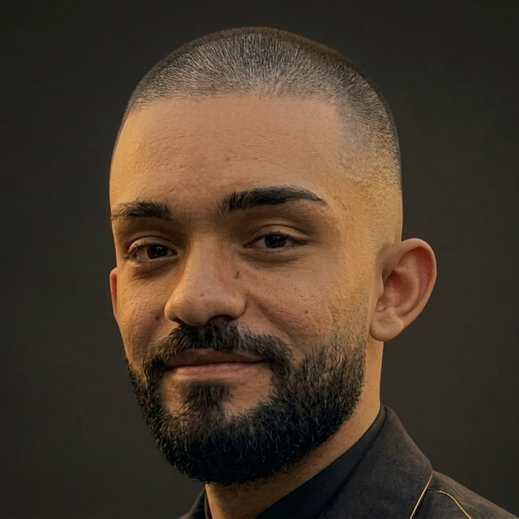

AI Engineer · Researcher · PhD Candidate
I build production AI systems that read, understand and act on complex documents — and the research that makes them better.
Bridging the frontier between symbolic intelligence and neural perception — in research and in production.

Who I am
I'm a software engineer turned AI researcher with over nine years of hands-on experience building systems that scale — from e-invoicing platforms processing millions of documents for the Italian public administration, to production LLM pipelines handling 172,000+ insurance documents every day.
Today I work at Leithà (Unipol Group), where I lead the development of specialized extraction and classification pipelines powered by fine-tuned language models. My work bridges the gap between cutting-edge AI research and high-throughput production systems.
As a PhD candidate at Università Guglielmo Marconi, I investigate neuro-symbolic approaches to natural language understanding — specifically how hyperbolic geometry and symbolic knowledge structures can augment neural representations. My flagship project, JENeSyM, integrates WordNet with neural embeddings in a Poincaré manifold.
I've collaborated with Professor Guido Vetere on AI systems presented at IEEE MetroXRAINE and HHAI 2023, I lecture at the postgraduate level, and I serve as a peer reviewer for international journals. Research and engineering are not opposites for me — they are the same conversation.
What I can do for you
I take AI systems end-to-end: problem framing, data, fine-tuning, deployment and monitoring — with measurable business results. Here is where I create the most value.
Career
Nine years across insurtech, research labs, HPC consortia and enterprise software — with a consistent thread: systems that must work, at scale, every day.
Impact
Numbers from production systems, not benchmarks.
Academia
Peer-reviewed work across Q1/Q2 journals and international conferences in AI, NLP, and software engineering — with a focus on prompt engineering, lexical semantics, and human–LLM interaction.
Peer reviewer for international journals including Scientific Reports, Automated Software Engineering, Software Quality Journal, Soft Computing and Discover Artificial Intelligence.
Formation
Let's talk
Whether it's research collaboration, an AI engineering challenge, or a conversation about neuro-symbolic systems — I'm always open to a good exchange of ideas.
Email Me